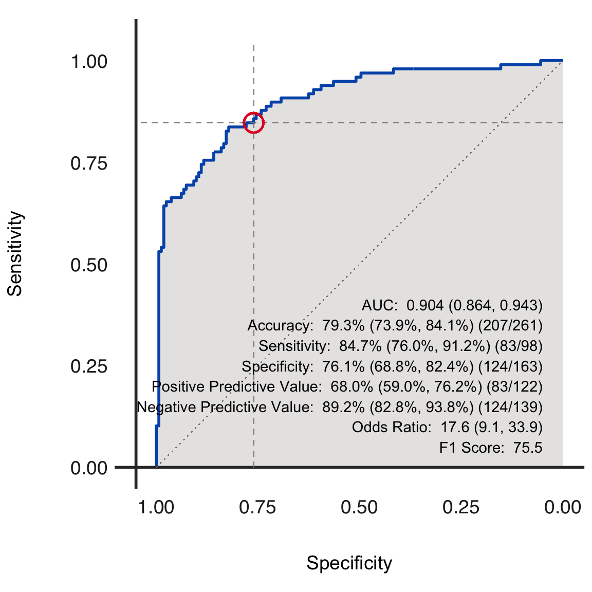

Plot ROC curve for a dx object
dx_roc( dx_obj, curve_color = "#0057B8", fill_color = "#cfcdcb", text_color = "black", add_text = TRUE, add_ref_lines = TRUE, add_fractions = TRUE, axis_color = "#333333", add_ref_circle = TRUE, ref_lines_color = "#8a8887", circle_ref_color = "#E4002B", summary_stats = c(1, 2, 3, 4, 5, 6, 7, 8), filename = NA )
| dx_obj | An object of class dx |
|---|---|
| curve_color | Color of ROC curve |
| fill_color | Color to be filled in under the ROC curve. Use "transparent" if you do not want a color to show. |
| text_color | Color of text on ROC curve |
| add_text | (Logical) Include stats on ROC curve? |
| add_ref_lines | (Logical) Include reference lines on ROC curve? |
| add_fractions | (Logical) Include fractions on ROC curve? |
| axis_color | Color of x and y axis |
| add_ref_circle | (Logical) Include a circle around specificity and sensitivity at the specified threshold? |
| ref_lines_color | Color for reference lines |
| circle_ref_color | Color of reference circle |
| summary_stats | Statistics to include on ROC curve |
| filename | File name to create on disk using ggplot2::ggsave. If left NA, no file will be created. |
dx_obj <- dx( data = dx_heart_failure, true_varname = "truth", pred_varname = "predicted", outcome_label = "Heart Attack", threshold_range = c(.1, .2, .3), setthreshold = .3, grouping_variables = c("AgeGroup", "Sex", "AgeSex") ) dx_roc(dx_obj)